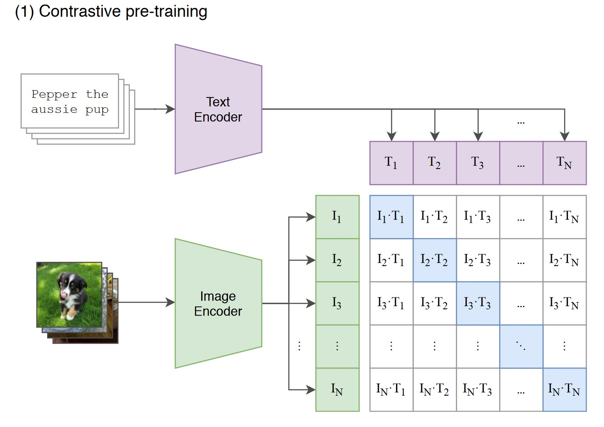
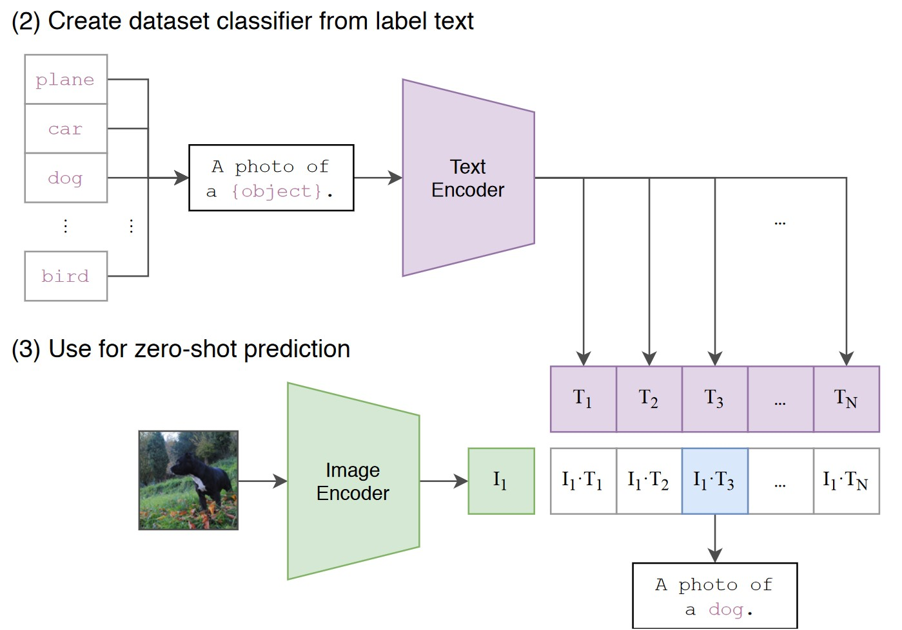
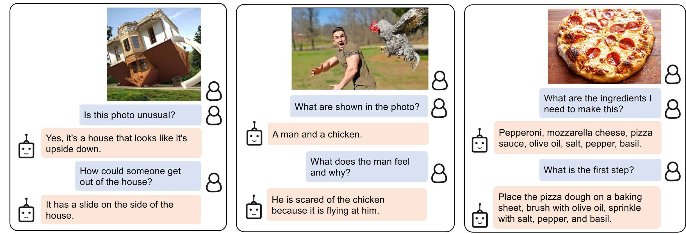
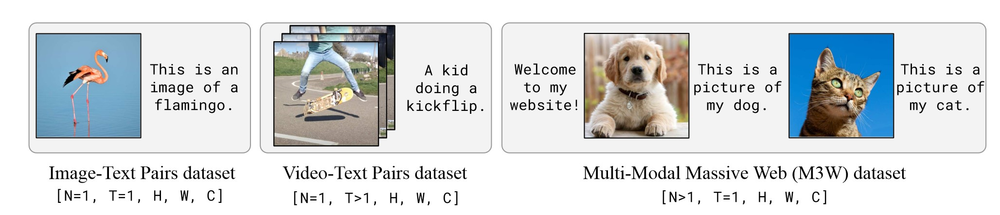
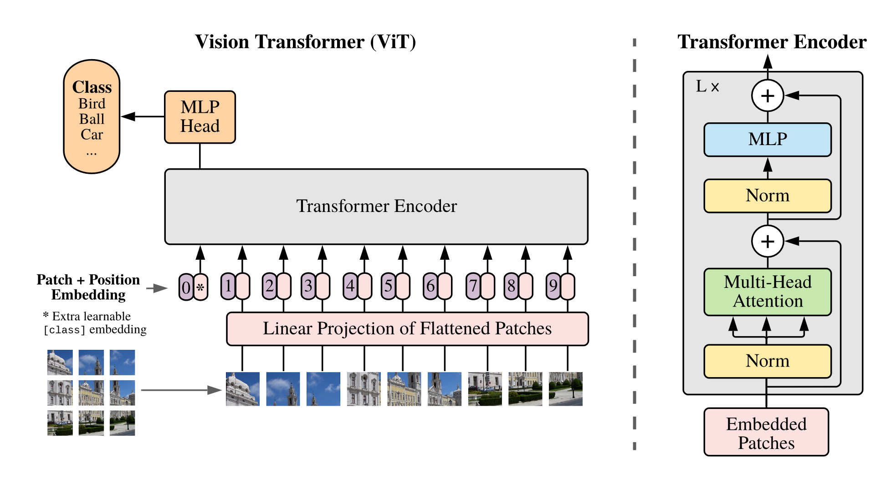
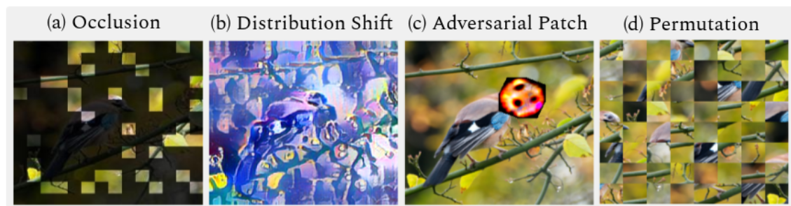

import requests
from PIL import Image
from transformers import CLIPModel, CLIPProcessor
# 1) Get Models and Data Pre-Processors
model = CLIPModel.from_pretrained("openai/clip-vit-base-patch32")
processor = CLIPProcessor.from_pretrained("openai/clip-vit-base-patch32")
# 2) Define Input Data: Image and Texts
url = "http://images.cocodataset.org/val2017/000000039769.jpg"
image = Image.open(requests.get(url, stream=True).raw)
prompt_template = "a photo of a {}"
classes = ["cat", "dog", "car", "tree"]
prompts = [prompt_template.format(class_name) for class_name in classes]
# 3) Pre-Process Inputs
inputs = processor(
text=prompts,
images=image,
return_tensors="pt",
padding=True,
)
# 4) Forward-Pass
with torch.no_grad():
outputs = model(**inputs)
logits_per_image = outputs.logits_per_image # this is the image-text similarity score
# 5) Find most likely label
probs = logits_per_image.softmax(dim=1)
print("Label:", classes[probs.argmax().item()])6 - Recent Advances
TipLearning Objectives
By the end of this lecture you should be able to:
- Define foundation models and explain how large-scale pre-training enables transfer learning across diverse downstream tasks with minimal task-specific data.
- Describe CLIP’s contrastive learning approach for joint vision-language understanding and apply it to zero-shot image classification and retrieval tasks.
- Understand multi-modal models (VQA, BLIP2, Flamingo) that process visual and textual data simultaneously for tasks like visual question answering and accessibility applications.
- Explain Vision Transformer (ViT) architecture, including how images are split into patches, linearly embedded, and processed with self-attention mechanisms.
- Compare architectural differences between CNNs and Vision Transformers regarding inductive biases, receptive fields, and weight sharing patterns.
- Evaluate trade-offs between CNNs and ViTs in terms of data efficiency, scalability, robustness to corruptions, and computational requirements.
- Apply appropriate architecture selection strategies based on dataset size, computational resources, and task requirements (local vs global context).
- Recognize that hybrid architectures combining convolutional and transformer layers leverage benefits of both inductive biases and global attention mechanisms.
TipTLDR Recap
Foundation Models: Large-scale pre-trained models on vast datasets, fine-tunable for diverse tasks with small data; can be multimodal (text + images)
CLIP (Contrastive Language-Image Pre-training):
- Contrastive learning: maximize similarity for correct image-text pairs, minimize for incorrect
- Zero-shot classification via language understanding, image search, duplicate detection
- Fine-tunable when zero-shot insufficient
Multi-Modal Models (VQA): Combine vision + language (BLIP2, Flamingo) for visual question answering, accessibility, chat systems with visual understanding
Vision Transformers (ViT):
- Split image into patches → linear embedding + positional encoding → transformer with self-attention
- Global receptive field from first layer (all patches attend to each other)
- Applications: classification, detection (DETR), segmentation, multimodal tasks
CNNs vs ViTs:
| Aspect | CNNs | ViTs |
|---|---|---|
| Inductive Biases | Strong (local, translation equivariance) | Minimal (learn from data) |
| Receptive Field | Local → hierarchical | Global from layer 1 |
| Data Efficiency | ✅ Small datasets | ❌ Need 10M+ images |
| Scalability | Limited | ✅ Scales well |
| Compute | ✅ Efficient | ❌ Quadratic self-attention |
| Long-Range | ❌ Need depth | ✅ Natural via attention |
| Best For | Limited data/compute | Large datasets, global context |
Current State: Similar performance when pre-trained on massive datasets; no clear winner.
Hybrid architectures combine CNN (local biases) + transformers (global attention).
Choose based on: limited data/compute → CNNs; large datasets/global context → ViTs.
1 Foundation Models
Foundation models are large-scale machine learning models trained on vast amounts of data that can be fine-tuned for various downstream tasks. These models have demonstrated remarkable capabilities in natural language processing, computer vision, and other fields.
1.1 Characteristics of Foundation Models
- Large-scale Pre-training: Foundation models are pre-trained on extensive datasets, enabling them to capture a wide range of knowledge.
- Transfer Learning: These models can be fine-tuned on specific tasks with relatively small datasets, making them versatile and efficient.
- Multimodal Capabilities: Some foundation models can process and integrate multiple types of data, such as text and images.
1.2 CLIP: A Foundation Model Example
CLIP (Contrastive Language-Image Pre-training, Radford et al. (2021)) is a foundation model developed by OpenAI. It is designed to understand images and text jointly, making it capable of tasks like zero-shot image classification.
1.2.1 How CLIP Works

CLIP is pre-trained on a diverse dataset of images and their corresponding textual descriptions. It learns to associate images with their textual descriptions using a contrastive learning approach, which maximizes the similarity between correct image-text pairs and minimizes the similarity between incorrect pairs.
1.2.2 How CLIP can be applied

1.2.3 Applications of CLIP
- Zero-Shot Classification: CLIP can classify images into categories it has not explicitly been trained on by leveraging its understanding of language.
- Image Search: By inputting a textual description, CLIP can retrieve relevant images from a database.
- (near) Duplicate Detection: CLIP can assist in identifying near duplicate images.
1.3 Example
Here’s a simple example of using CLIP for zero-shot image classification:
1.3.1 Fine-Tuning CLIP
If CLIP does not perform well with zero-shot learning, it can be fine-tuned with various techniques. This is a powerful mechanism because the features that CLIP has learned are very powerful and might be useful for your target task.
2 Multi-Modal Models
Multi-modal models are able to process mutliple types of data (modes) simultaneously.
2.1 Visual Question Anwering
One task where multi-modality is required, is Visual Question Answering (VQA). Only by jointly understanding the visual input and the question such tasks can be solved. See Figure 3 for an example from a chat system.

2.2 How VQA Works
VQA models combine visual data (images) with textual data (questions) to generate accurate answers. These models are typically pre-trained on large datasets containing images, questions about those images, and the corresponding answers. Figure 4 shows training data examples that were used in the Flamingo model Alayrac et al. (2022). That particular model, and many other multi-modal models, is based on pre-trained foundation language and visual models and subsequently fine-tuned to learn how to combine their features for multi-modal tasks.

2.3 Applications of VQA
- Accessibility: VQA can help visually impaired users by answering questions about their surroundings based on images captured by a camera.
- Chat Bots with Visual Understanding: VQA systems can be used in chat bots to incorporate visual inputs.
- Customer Support: VQA can enhance customer support by allowing users to submit images and ask questions about products or services.
3 Vision Transfomers
Transformers have emerged as foundational architectures in modern machine learning, significantly impacting NLP, computer vision, and multimodal tasks.
3.1 What Are Transformers?
Transformers, introduced by Vaswani et al. (2017), use a self-attention mechanism that enables the model to consider relationships between different parts of the input data. This enables transformers to process data in parallel and capture long-range dependencies more effectively than previous architectures (such as recurrent neural networks).
Key Concepts in Transformers:
- Self-Attention: Enables each input element to focus on all other elements, capturing complex dependencies within the data.
- Positional Encoding: Injects information about the order of the sequence, allowing the transformer to process sequential data despite its parallel structure.
- Scalability: The architecture scales well, making it suitable for training on large datasets across various domains.
3.2 Vision Transformers (ViT)
Vision Transformers (ViTs), proposed by Dosovitskiy et al. (2020), apply the transformer architecture to image data by splitting images into fixed-size patches and treating each patch as a token in a sequence. This approach enables ViTs to capture spatial relationships in images without convolutional layers.

Applications of Vision Transformers
- Image Classification: ViTs have achieved competitive results in image classification, sometimes outperforming CNNs.
- Object Detection and Segmentation: Transformers can be adapted for tasks like object detection by directly predicting bounding boxes, as shown in models like DETR (Carion et al. (2020)).
- Multimodal Models: Transformers enable models to integrate data from different sources, such as text and images, for tasks like image captioning and visual question answering.
3.3 Comparison: Vision Transformers and Convolutional Neural Networks
ViTs and CNNs are both prominent architectures in computer vision, each with unique strengths and weaknesses.
3.3.1 Architectural Differences
CNNs are designed with built-in spatial inductive biases. Using convolutions assumes that neighbouring pixels are related and that local patterns are relevant (restricted receptive field) and should be detected everywhere in the input (weight sharing). This makes CNNs efficient with limited data and effective at capturing local image features. Local features can be aggregatred hierarchically to capture global patterns.
ViTs process images by dividing them into fixed-sized patches, treating each patch as a “token” akin to words in natural language processing. They then use self-attention mechanisms to capture relationships between all patches simultaneously, allowing the model to learn global dependencies without focusing exclusively on local information already in the first layer (no restrictions in the receptive field).
3.3.2 Scalability and Flexibility
Generally: inductive biases are beneficial because they do not need to be learned from data. However, inductive biases also restrict a models flexibility since such biases might not always be perfectly aligned with the true data distribution. While CNNs excel in low-data regimes and with resource-limited applications, ViTs are scalable and perform well with self-supervised learning on large datasets. ViTs have shown excellent performance on massive datasets (10M+ images), even surpassing CNNs when pretrained with sufficient data and augmented with techniques like self-supervised learning.
3.3.3 Robustness and Transferability
Robustness to noise and corruptions (see Figure 6), as well as the ability to transfer learned features to downstream tasks is highly relevant in practical settings. Some studies indicate that ViTs can handle image corruptions and data shifts more robustly than CNN (Naseer et al. (2021)), however, is contradicted by newer studies (Pinto, Torr, and Dokania (2022)).

3.3.4 Pros and Cons
CNNs:
- Pros:
- Efficiency for Small Datasets: CNNs excel in small to moderate datasets, as they are highly effective in learning spatial features with fewer parameters.
- Robustness to Variations: Their design enables in- and equivariance to small geometrical transformations, making them resilient in many real-world applications.
- Cons:
- Limited Long-Range Dependencies: Due to their focus on local receptive fields, CNNs may struggle with capturing long-range dependencies unless deeper architectures are used.
Vision Transformers (ViTs):
- Pros:
- Scalability and Flexibility: ViTs perform well with large datasets and can be scaled efficiently by increasing model size, often benefiting from self-supervised pre-training on massive image corpora.
- Long-Range Dependency Capture: Self-attention mechanisms allow ViTs to capture long-range dependencies between patches, which can be beneficial in tasks requiring global context.
- Cons:
- Data Efficiency: ViTs often require significantly more data and pre-training to achieve competitive performance, as they lack the inherent spatial inductive bias of CNNs.
- Computational Intensity: Self-attention mechanisms, especially for high-resolution images, can be computationally demanding and require substantial memory, limiting their efficiency.
In summary, while CNNs remain highly effective for many computer vision tasks, especially when data or compute resources are limited, ViTs provide a scalable alternative that excels with larger datasets and tasks requiring a global view of image data.
3.4 Conclusion
Currently, transformers and CNNs perform similarily when pre-trained on massive datasets. There has been various researach comparing both architectures, none seems to be able to conclusively judge which architecture is superior (e.g. Smith et al. (2023)). The inductive biases of CNNs are often valuable, as is the ability of transformers to consider global relations early. This has led to the development of hybrid architectures that combine convolutional layers with transformer layers. It remains to be seen where this research leads.
Here is an interesting blog post on the topic of which architecture to choose: Werff (2024).
4 References
Alayrac, Jean-Baptiste, Jeff Donahue, Pauline Luc, Antoine Miech, Iain Barr, Yana Hasson, Karel Lenc, et al. 2022. “Flamingo: A Visual Language Model for Few-Shot Learning.” arXiv. http://arxiv.org/abs/2204.14198.
Carion, Nicolas, Francisco Massa, Gabriel Synnaeve, Nicolas Usunier, Alexander Kirillov, and Sergey Zagoruyko. 2020. “End-to-End Object Detection with Transformers.” arXiv. http://arxiv.org/abs/2005.12872.
Dosovitskiy, Alexey, Lucas Beyer, Alexander Kolesnikov, Dirk Weissenborn, Xiaohua Zhai, Thomas Unterthiner, Mostafa Dehghani, et al. 2020. “An Image Is Worth 16x16 Words: Transformers for Image Recognition at Scale.” arXiv:2010.11929 [Cs], October. http://arxiv.org/abs/2010.11929.
Li, Junnan, Dongxu Li, Silvio Savarese, and Steven Hoi. 2023. “BLIP-2: Bootstrapping Language-Image Pre-Training with Frozen Image Encoders and Large Language Models.” arXiv. http://arxiv.org/abs/2301.12597.
Naseer, Muzammal, Kanchana Ranasinghe, Salman Khan, Munawar Hayat, Fahad Shahbaz Khan, and Ming-Hsuan Yang. 2021. “Intriguing Properties of Vision Transformers.” arXiv. http://arxiv.org/abs/2105.10497.
Pinto, Francesco, Philip H. S. Torr, and Puneet K. Dokania. 2022. “An Impartial Take to the CNN Vs Transformer Robustness Contest.” arXiv. http://arxiv.org/abs/2207.11347.
Radford, Alec, Jong Wook Kim, Chris Hallacy, Aditya Ramesh, Gabriel Goh, Sandhini Agarwal, Girish Sastry, et al. 2021. “Learning Transferable Visual Models From Natural Language Supervision.” arXiv:2103.00020 [Cs], February. http://arxiv.org/abs/2103.00020.
Smith, Samuel L., Andrew Brock, Leonard Berrada, and Soham De. 2023. “ConvNets Match Vision Transformers at Scale.” arXiv. http://arxiv.org/abs/2310.16764.
Vaswani, Ashish, Google Brain, Noam Shazeer, Niki Parmar, Jakob Uszkoreit, Llion Jones, Aidan N Gomez, Łukasz Kaiser, and Illia Polosukhin. 2017. “Attention Is All You Need.” Advances in Neural Information Processing Systems, no. Nips: 5998–6008. https://arxiv.org/abs/1706.03762.
Werff, Tobias van der. 2024. “CNN Vs. Vision Transformer: A Practitioner’s Guide to Selecting the Right Model.” https://tobiasvanderwerff.github.io/2024/05/15/cnn-vs-vit.html.